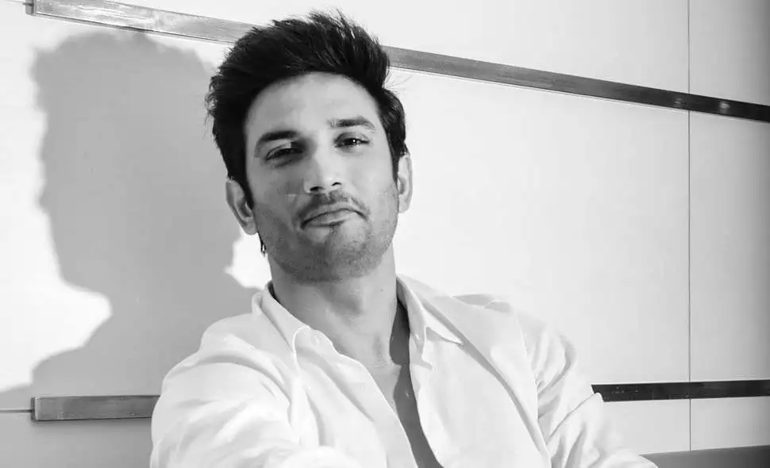

Sushant Singh Rajput Wiki, Height, Age, Death, Girlfriend, Family, Biography & More Sushant Singh Rajput was born on 21 January 1986 in Maldiha. Maldhia is a village of Purnea district in Bihar, India. Sushant Sing Rajput is a famous Bollywood Actor, dancer. And also a television personality. He started his journey with TV serial “Pavitra Rishta”. His first film is “Kai Po Che!” which is released in 2013.

Yashraj Mukhate Wiki/Profile
Yashraj Mukhate was born on 29-November-1996 in Aurangabad, Maharashtra. He is a music composer and music producer. He completed his schooling at Holy Cross High School, Aurangabad. Later he graduated in Electronics and Telecommunication Engineering from Sihagad College, Vadgaon Campus, Pune. Yashraj is from Maharashtrian Family.
Hrithik Roshan (pronounced [rɪθɪk roʊʃən]; born 10 January 1974) is an Indian actor who works in Hindi films. He has portrayed a variety of characters and is known for his dancing skills. One of the highest-paid actors in India, he has won many awards, including six Filmfare Awards, of which four were for Best Actor. Starting from 2012, he has appeared in Forbes India's Celebrity 100 several times based on his income and popularity.